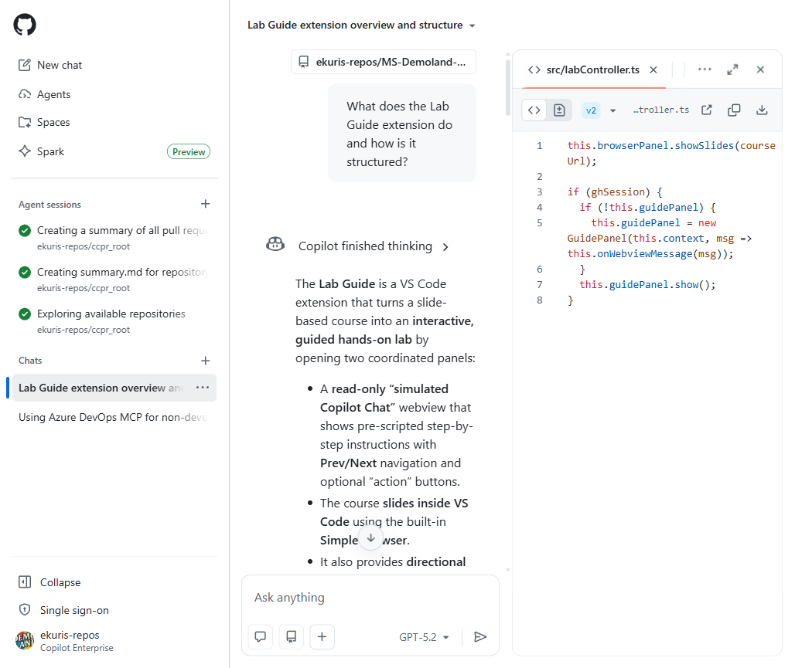

Chat Platform Agents - Agent Wars: Return of the Chat-ai
Connect GitHub notifications, commands, and reviewable agent work to Teams and Slack
Archived course. Slide-only factual refresh: October 27, 2026. Tenant workflows and media still need verification.
Overview
What We'll Cover
Today's Agenda
- ChatOps fundamentals: connect conversations with development work
- GitHub in Teams: install the app, connect identity, and delegate work
- GitHub in Slack: subscriptions, issue commands, and optional Copilot sessions
- Supported extensibility: retired Copilot Extensions versus current Apps and MCP
- Common workflows: notifications, issue management, and reviewed agent output
- Custom integrations: scoped GitHub Apps, webhooks, and workflow dispatch
- Governance: permissions, conversation context, approvals, and evidence
Part 1
ChatOps Fundamentals
What Is ChatOps?
- Conversation-driven operations: connect chat with development tools and actions
- Bring selected repository events, issue actions, and agent tasks into team discussions
- Reduce context switching while retaining links to authoritative GitHub records
- Channel history supports collaboration; it is not a complete compliance audit log
- GitHub's Hubot helped popularize chat bots; deterministic commands and AI agents coexist
graph LR
Chat[Team Chat] -->|commands| App[GitHub App]
App -->|scoped requests| GitHub[GitHub Platform]
GitHub -->|events| App
App -->|notifications| Chat
Chat -->|optional delegation| Agent[Copilot Agent]
Agent -->|reviewable artifacts| GitHub
Why ChatOps Matters
Without the Integration
- Manually relay PR updates
- Recreate issue context from chat
- Switch tools to discover a failed run
- Repeat a task description elsewhere
With a Supported Integration
- Subscribe to selected repository events
- Create or update issues from chat
- Open linked workflow evidence
- Delegate an agent task for human review
Part 2
GitHub in Microsoft Teams
Setting Up GitHub in Teams
- Follow the official GitHub integration installation flow and add the GitHub app
- Use
@GitHubto connect your GitHub account and see@GitHub help - Teams workspace app approval and GitHub organization/repository authorization are separate
- Agent work additionally needs a paid Copilot plan and enabled cloud sandboxes/policies
- Current docs label agent features public preview; exact tenant setup remains unverified

Choose the Right Teams Interaction
| Interaction | Example | Boundary |
|---|---|---|
| Repository notifications | @GitHub subscribe OWNER/REPO | Authorized app and selected repository events |
| Issue management and previews | Create an issue or share an authorized GitHub link | Supported app controls and repository access |
| Copilot agent task | @GitHub followed by a scoped investigation or change request | Eligible plan, policy, context, and review |
Teams in Action: Delegate, Then Review
Illustrative conversation, not an executed demo or a guaranteed response format.
You: @GitHub Investigate the login redirect failure in
contoso/web-app. Explain the likely cause before changing code.
You: @GitHub Create a pull request to fix the redirect loop
and add a regression test. repo=contoso/web-app branch=main
Result: Inspect the linked artifact, diff, tests, and checks on GitHub.
You: @GitHub Keep the existing callback URL validation.
Revise the proposed fix in this thread.
Part 3
GitHub Integrations in Slack

Existing illustration only. Current tenant UX and screenshot currency remain unverified.
Setting Up GitHub for Slack
- Install the GitHub app from the Slack Marketplace, with workspace approval if required
- Connect your GitHub account from the app's welcome message or
/github signin - Invite the app to the intended channel with
/invite @github - Authorize the GitHub app for the repositories you intend to use
- Optional agent sessions need an eligible paid Copilot plan and enabled policies/cloud sandboxes
GitHub for Slack Capabilities
- Commands:
/github help, subscriptions, and issue lifecycle actions - Notifications: selected repository events and workflow start/completion updates
- Issue cards: documented comment, edit, close, and reopen actions
- Workflow controls: supported deployment approvals and reruns, subject to permissions
- Optional agent work: mention
@GitHubto delegate and steer a task
Key GitHub for Slack Commands
/github help
/github subscribe contoso/web-app pulls issues deployments
/github subscribe contoso/web-app workflows
/github unsubscribe contoso/web-app deployments
/github close https://github.com/contoso/web-app/issues/203- Feature names are space separated
subscribeandunsubscribechange channel notificationsclosetakes an issue link and changes issue state; verify the target first- Examples use fictional repositories; do not paste mutating commands into a live channel casually
Part 4
Supported Extensibility Boundaries
graph LR
Chat[Teams or Slack] --> App[Supported GitHub App]
App --> API[GitHub APIs]
API -->|webhook events| Receiver[Verified Event Receiver]
IDE[Compatible AI Client] --> MCP[Approved MCP Server]
MCP --> Tools[Scoped Backend Tools]
Copilot Extensions: Retired Model, Current Choices
- Retired November 10, 2025: server-side Copilot Extensions built as GitHub Apps, including private extensions
- Do not build the former agent endpoint or install its retired Marketplace extension category
- Still supported: standard GitHub Apps and client-side VS Code extensions
- MCP provides tools/context in supported AI clients; it is an architectural replacement, not a renamed endpoint
- Check each client's support, server trust, permissions, and organizational policy
Choose the Smallest Supported Integration
| Need | Start With | Check First |
|---|---|---|
| Repository updates and issue actions in chat | Native GitHub app | Documented commands and repository authorization |
| Investigation or a proposed code change | Optional Copilot agent session | Plan, policy, context, and review boundary |
| A bespoke operational action | Scoped GitHub App and verified event receiver | Caller authority and supported chat transport |
| External tools in a compatible AI client | Approved MCP server | Host support, trust, and least privilege |
Part 5
Common ChatOps Workflows
Trigger Actions & Check Status
- Native: workflow notifications and supported approval/rerun controls; verify the platform's permissions and UI
- Custom dispatch: a bot can call the workflow API after authenticating and authorizing the requester
- Requires
workflow_dispatch, a valid ref, and a token with appropriate Actions write permission - Pin the REST API version, constrain repository/ref, and report only confirmed run results
# Illustrative authenticated request made by a custom bot
POST /repos/contoso/api/actions/workflows/build-test.yml/dispatches
{ "ref": "main" }
# Link the actual returned or subsequently confirmed run.
# Do not invent a run number or claim tests passed.Issue & PR Management from Chat
Deterministic App Features
- Create an issue from the discussion
- Use documented issue lifecycle actions
- Subscribe to PR and review events
- Follow authorized link previews
Reviewed Agent Work
- Investigate a repository-scoped problem
- Ask for a plan before implementation
- Delegate a bounded proposed change
- Inspect the resulting PR, tests, and checks
Investigate with Explicit Repository Context
- Name the repository and the question you need answered
- Ask for source paths and evidence, then verify the linked content
- Keep an investigation read-only until you explicitly authorize a change
- Do not assume automatic org-wide code, wiki, or cross-repository search
@GitHub Investigate where authentication is handled in
contoso/api. Do not change files. Cite the relevant paths
and explain which evidence supports your answer.
Review: Open cited files and confirm the current implementation.
Treat generated explanations as hypotheses until checked.
Part 6
Building Custom Integrations
Webhooks & GitHub Apps
- Webhooks deliver selected GitHub events to your receiver via HTTP POST
- GitHub Apps use scoped installation or user authority to read data and take actions
- Validate webhook signatures, check event/action, acknowledge promptly, and deduplicate deliveries
- For Teams messages, prefer supported Workflows or proactive bot messaging over legacy connector setup
- Choose Slack's supported messaging transport separately; treat webhook URLs and bot credentials as secrets
A Safe Custom Action Boundary
- Authenticate the chat request and identify the requester
- Authorize the specific repository, operation, and allowed ref
- Validate input and preserve required human approvals
- Execute with a short-lived, minimally scoped app token
- Record a correlation ID and link to the actual GitHub result
GitHub event receivers separately validate webhook signatures and deduplicate deliveries. This is a design checklist, not runnable bot code.
Part 7
Security & Permissions
Securing Chat Integrations
- Identity: direct-message agent actions use linked personal authority; shared-context artifacts can use the app identity
- Authorization: starting agent changes requires repository write access and applicable policies
- Context: the agent can capture the entire thread and store context in generated artifacts
- Privacy: Business/Enterprise data is not used to train AI models; this is not zero retention or a residency guarantee
- Evidence: correlate supported audit events, workflow records, artifact history, and integration logs
Enterprise Best Practices
Governance
- Approve workspace apps and GitHub policies separately
- Review thread membership before sharing repository context
- Secure app keys and use constrained, short-lived tokens
- Preserve repository rules, human reviews, and deployment gates
Adoption
- Start with narrow subscriptions and read-only investigations
- Enable bounded write tasks only with explicit authorization
- Train teams to verify artifacts and distinguish app commands
- Recheck preview status, tenant UX, and supported transports
Summary
Wrap-Up & Next Steps
Key Takeaways
- Separate notifications, commands, agent sessions, and custom actions
- Use the supported GitHub apps; delegate agent tasks with
@GitHub - Server-side Copilot Extensions are retired; standard Apps and supported MCP clients are distinct choices
- Check acting identity, repository authority, thread context, and human approval
- Verify actual artifacts and logs; do not assume zero retention or universal audit coverage
- This course remains archived; media and authorized tenant verification are unfinished
Thank You
Questions? Reach out on Teams or open an issue.